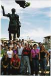

"și totuși se poate! Este meritul Dlui. Vlad Cubreacov, deputat din Republica Moldova, de-a fi pus problema istroromână la Adunarea parlamentară a Consiliului Europei (APCE), unde nici unul dintre mai numeroșii deputați din dreapta Prutului, nu a avut inima ca sa o pună...," se arata in textul transmis de către Emil Petru Rațiu, Președintele Asociației culturale lu rumeri din Istrie "Andrei Glavina," preluat în exclusivitate de Romanian Global News.
Dl. Vlad Cubreacov, încununează astfel idealul celor mai conștienți dintre istroromâni, început acum 120 de ani, încă de pe vremea Austro-Ungariei, exprimat prin petițiile adresate autorităților la 1887 pentru a avea școală în limba lor, de către Francisc Stroligo, și la 1888 de alți 47 de gospodari, capi de familie, din Sușnievița. Acest ideal s-a împlinit în 1921, prin deschiderea școlii "Împăratul Traian" la Valdarsa (Sușnievița), dar a apus repede, ca o zi de primăvară frumoasă, dar scurtă, prin moartea apostolului Andrei Glavina în 1925 și prin nepăsarea – atunci ca și acum - a guvernanților de la București.
A rămas însă comună bilingvă cu autoadministrație istroromână, Valdarsa, până în 1943, când ostilitățile celui de al doilea război mondial au ajuns în Istria, stingând orice scânteie de viață națională a istroromânilor. S-au așternut 50 de ani de uitare peste istroromâni, ca un lintoliu de moarte, până la începutul anilor 1990, când un român stabilit în Italia, a strâns în jurul său un grup de câțiva italieni și istroromâni și a început călătoriile în Istria, nu ca turist sau lingvist, ci interesat de continuitatea existenței fraților săi în vatra lor străbună. Aceste calatorii, începute în 1990 – vezi descrierea lor in ziarul "Dreptatea" din 7 și 8 mai 1991 - au fost premiza înființării în 1994 a "Asociației culturale istroromâne Andrei Glavina" la Triest, al cărei scop statutar a fost și este păstrarea identității etnice și lingvistice a istroromânilor prin toate mijloacele legale la dispoziție.
În acest scop a fost editată de către Emil Petru Rațiu, Președintele Asociației Andrei Glavina, prima revistă în dialect istroromân, "Scrisore către fraț rumeri," în condițiile grele ale lipsei unui dicționar istroromân și fără ajutor financiar sau de altă natură, au fost publicate poezii și texte istroromâne în reviste de specialitate din Belgia, s-a participat, de unul singur, fără susținere financiară, la Congresele Consiliului Europei pe tema aplicării Cartei limbilor regionale sau minoritare, la Innsbruck (1998), Haga (Noordwijkershout- 2001), cerându-se insistent aplicarea Cartei în favoarea istroromânilor, ca dealtfel și la Congresele Uniunii Federative a Comunităților Etnice Europene (UFCE) la S. Moritz (1995), Timișoara (1996), Portschach am Worthersee (Austria, 1997), unde Adunarea congresuală a UFCE a votat în unanimitate o rezoluție la cererea Asociației "Andrei Glavina," prin care se invitau Consiliul Europei, OSCE, Parlamentul european, să intervină pe lângă autoritățile croate pentru acordarea statutului de minoritate națională istroromânilor și se făcea apel la guvernele croat și român pentru aplicarea clauzelor din Tratatul de baza româno-croat în favoarea minorității românești din Croația, precum și la Praga (1998), Subotica (2001), Bolzano (2006), etc. Atașam rezoluția 1997-02 în favoarea istroromânilor.
Paralel cu acestea, s-au desfășurat la Triest, la Veneția, dar și la "Accademia di Romania" la Roma, numeroase întruniri și conferințe în favoarea istroromânilor, dintre care se remarcă pentru amploarea sa, cea din noiembrie 1996, organizată la Triest de către Doctorul Ervin Curtis, sub auspiciile Consiliului Europei, în favoarea drepturilor istroromânilor, când Triest-ul a fost literalmente pavoazat cu afișe mari, de peste un metru înălțime, cerând drepturi lingvistice pentru istroromâni. Aceste manifestări au culminat cu Congresul istroromân de la Pola din 30 martie-1 aprilie 2000, organizat din inițiativa Asociației "Andrei Glavina," în colaborare cu Universitatea din Pola, al cărei decan era Prof. Goran Filipi; cu această ocazie, pentru prima oară, limba umililor țărani istroromâni, cici și ciribiri, a răsunat cu putere în aula acelei universități, in discursul inaugural ținut de Emil Petru Rațiu, promotorul manifestării, în dialectul istroromân.
Cercetări științifice, au dus la avansarea pentru prima oară în literatura istorică româneasca, a ipotezei originei istroromâne a marelui teolog din sec. XVI, Mattia Vlacich Flacius, ipoteză citată mai recent, ca atare, de către unii in presa românească, fără a indica însă, așa cum regulile o impun, sursa informației, care, în literatura istorică românească, se află numai în articolul publicat în "Adevărul literar și artistic" sub titlul "Un erou modern," la 19 oct. 2004.
Recent, Doctorul Ervin Curtis a organizat o expoziție cu stampe, ilustrate, tipărituri despre istroromâni, etc., începând de la cartea de la 1698 a lui Ireneo della Croce "Storia antica e moderna di Trieste" în care apare pentru prima oară numele național de "rumeri" pentru istroromâni, până la ultimele tipărituri în dialect istroromân, ale emeritului profesor Richard Sârbu, și până la cele mai recente, ale publicației, "Scrisore către fraț rumeri"; această expoziție a atras la Triest și în Istria în iunie 2007 reporterii unei reviste din Romania, "Formula AS," care au contribuit la popularizarea în rândurile publicului larg din țară, a problemei istroromânilor, creând în acest sens un vast ecou.
Această expoziție este acum deschisă, începând din 7 mai, la invitația patrioatei profesoare Viorica Bălțeanu, la Timișoara, bucurându-se de apreciere și viu interes; la începutul lunii iulie istroromânii sunt invitați la "Festivalul inimilor," tot la Timișoara, iar în septembrie 2008 sunt invitați de către Prof. Ramona Potoroaca, la muzeul "Astra" la Sibiu.
Echipa de cântece și jocuri "Zvoncearii" din Jeiăn, a mai participat în septembrie 2007 la un festival folcloric lângă Roma, redescoperind "pe viu" propriile origini. (Atașam o fotografie a grupului folcloric din Jeiăn, împreună cu Președintele Asociației "Andrei Glavina," în vizită la Columna lui Traian, la Roma.)
Acestea au fost trepte, pornind de la 1887, pe care, așa cum scrie Tudor Arghezi, și ni se pare că se potrivește și în cazul istroromânilor, "De la străbunii mei până la tine, Prin râpi și gropi adânci, Suite de bătrânii mei pe brânci, și care, tânăr să le urci te așteaptă, Cartea mea-i, fiule, o treaptă".
Aceste trepte, "suite prin râpi și gropi adânci," au dus azi la cererea de drepturi pentru istroromâni la APCE. Aceasta dovedește că atunci când există continuitate și a fost semănată sămânța, se pot întâmpla lucruri mari, deși mai rămân încă multe, multe trepte grele, de urcat... Îi uram mult succes Dlui. Vlad Cubreacov și îl vom sprijini cu toate posibilitățile noastre, în frumoasa sa inițiativă românească, convinși că urcușurile cele mai grele se înving cu inima entuziastă și cinste sufletească.
Pentru Romanian Global News, Emil Petru Rațiu, Președintele Asociației culturale lu rumeri din Istrie "Andrei Glavina.
June 3, 2008
© 2008 Romanian Global News